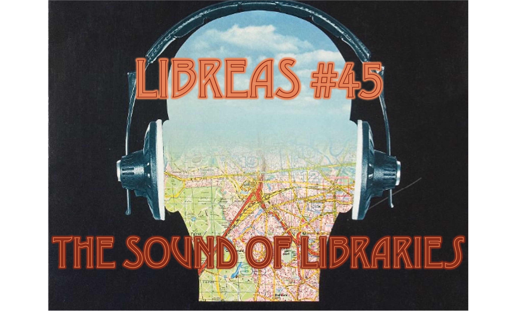

<h1><a href="inhalt/">LIBREAS #45 (2024) | Sound of Libraries</a></h1>

<p><a href="inhalt/"></a></p>

<small>Bildnachweis: Schallplatte "Berlin-Hören" (Kunstkopf - Stereophone Impressionen), 2… | Inventarnr.2008-38 | Foto: Deutsches Museum, CC BY-SA 4.0 | Foto beschnitten | <a href="https://digital.deutsches-museum.de/item/2008-38/">https://digital.deutsches-museum.de/item/2008-38/</small>